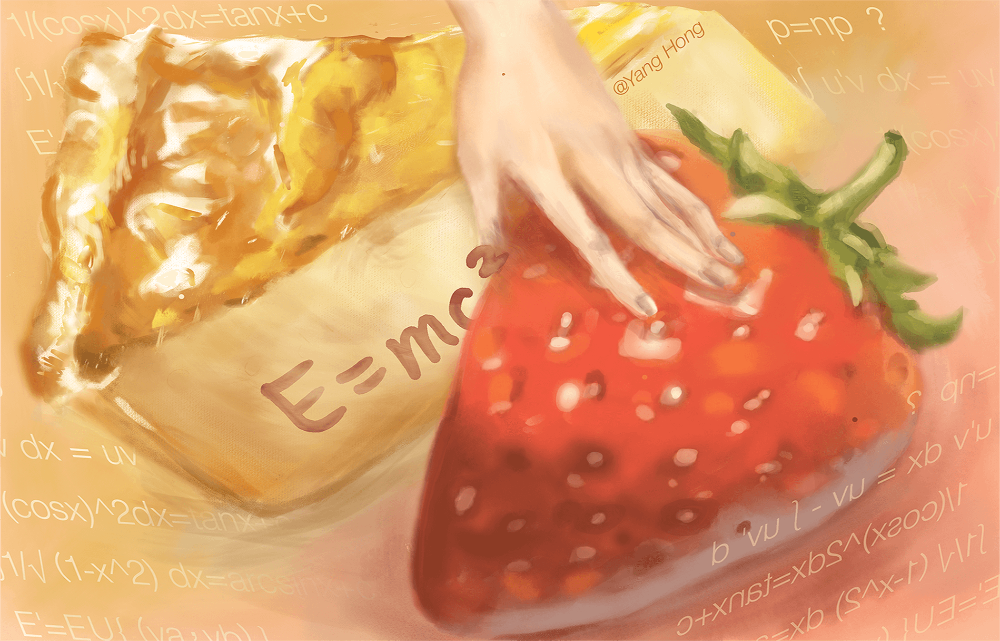
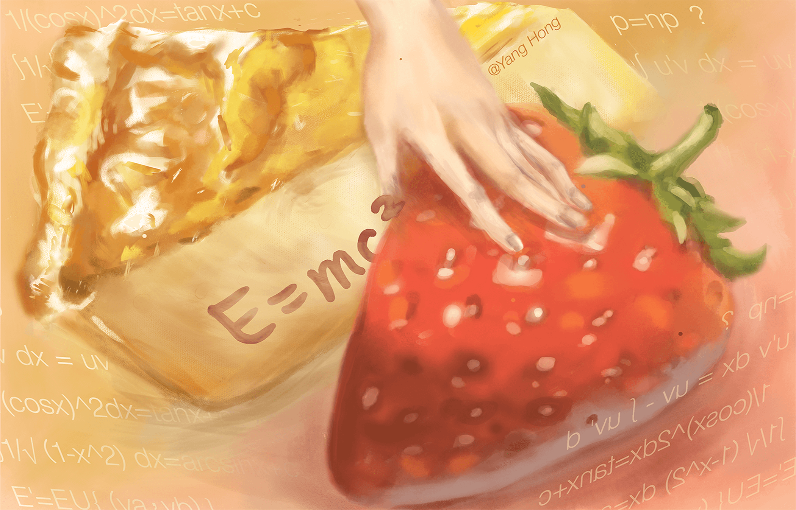

My name is Hong Yang. I'm an undergraduate majoring in Communication & Technology in NYCU, engrossed in multimedia design and communication theories.
Provided there's any question, feel free to
Contact Me

As the old saying goes, one should read ten thous-and books.
Yet I have no idea of how much truth still remained in those books, that's why I determined to travel ten thousand miles to figure it out.
From China Mainland to Taiwan, never do I halt to search for a lifelong belief holding for my academic career.
And what I've grasped hitherto is giving full respect to the value of humans, which can always be revealed in the Human-Centred Design or the ideal of media to Render Voice to the Voiceless.
EDUCATION & WORK
Natioanl Yang Ming Chiao
Tung University
Hsinchu, Taiwan
09 / 2019 - 06 / 2023
- GPA: 4.27 / 4.3 Top 2%
- Academic Achievement Award (2019-2021)
- Part-Time Research Scholarship Grantee in NYCU
(04/01/2021- 10/31/2021) - Treasurer of Mainland China Student Union (02/2020- 01/2021)
- Develop an enduring fascination with Human Computer Interaction and UX/UI Design.
Desire to engage in an Internship in this aspect.
Entertainment, Media and Tech-
nology Business Program
Online Project-Based Research led by Prof. Hardart
06 / 27 / 2020 - 08 / 08 / 2020
- Gain an insight into the ever-evolving lndscape of Entertainment, Media and Technology Industries, their intersecting points and sweeping trends.
- Maintain good performance and obtain a reference letter from Professor Paul C. Hardart, NYU.
- Complete an research paper on Chinese E&M Industry afterwards, successfully accepted by an Intermational Symposium.
Xiangshan No.3 High School
Ningbo City, Zhejang Prowince
09 / 12016 - 06 / 2019
- Graduated as the valedictorian, ranked in Top 0.8% of the College Entrance Exam in Zhejiang Province.
- The Second Prize of National Composition Contest for High School Students (2018)
- The First Prize of National Biology competition in Zhejang division (2018)
- Recipient of Wang Jiafu Scholarship (2017)
- Exchange Student to Europe at Humboldt-Schule Kiel (Germany, 07/2017)
PUBLICATION
Yang H., the first & corresponding author, Assimilation and Reassembling in Entertainment and Media Industry: Analysis af Innovation Theory Applied on Case Studies of Chinese Variety Shows, (Paper ID: HSSMEE 375).
- Accepted by the International Symposium on Humanities & Social Sciences, Managemen & Education Engineering (HSSMEE 2021) in March, 2021.
- Will be published in conference proceedings by IEEE Press and submitted for indexing in Ei Compendex and Googl Scholar.


 
